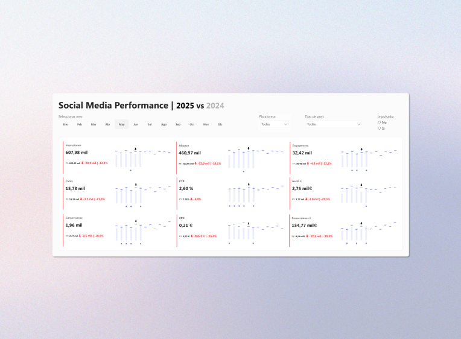
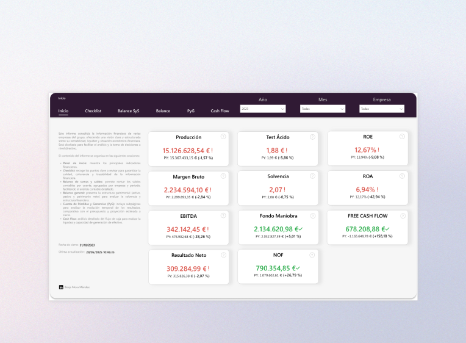
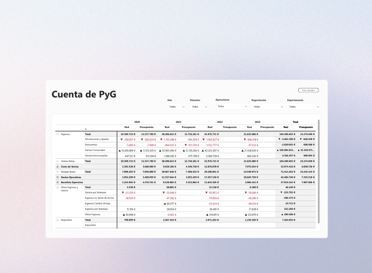
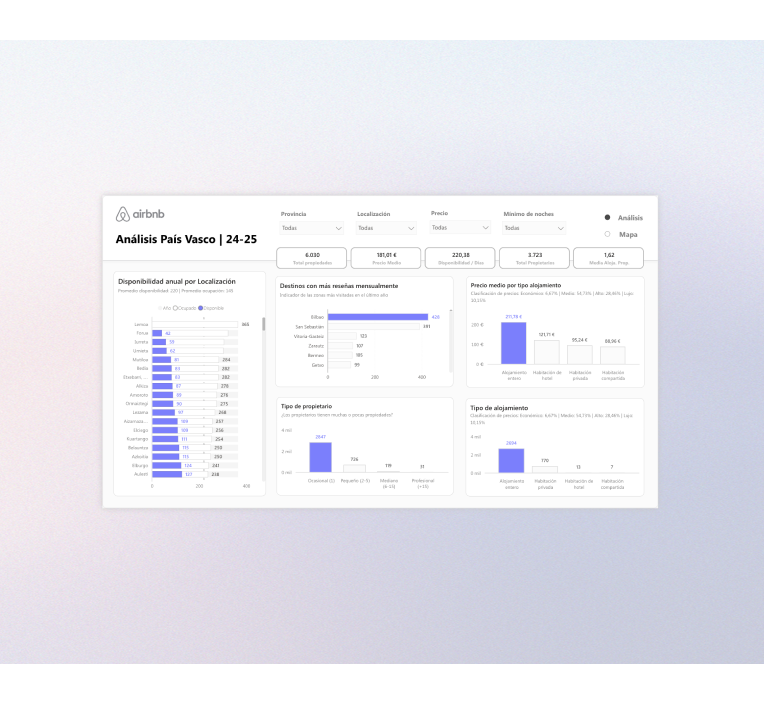
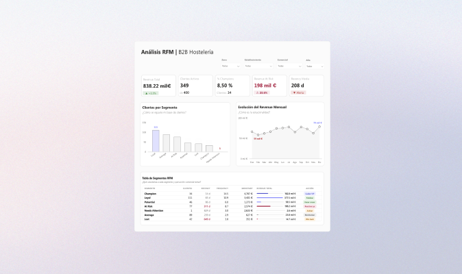
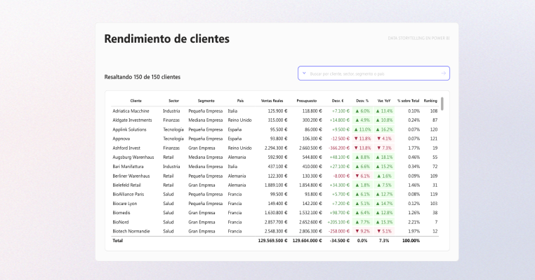
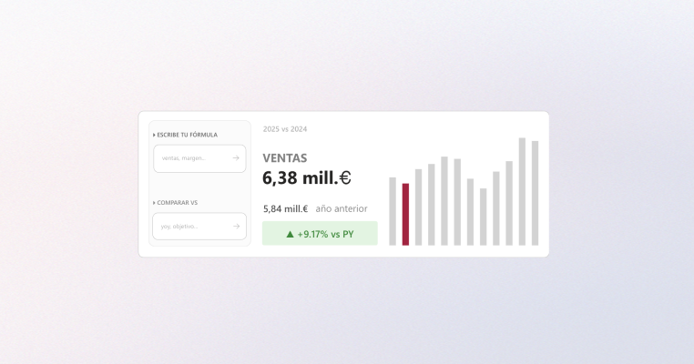
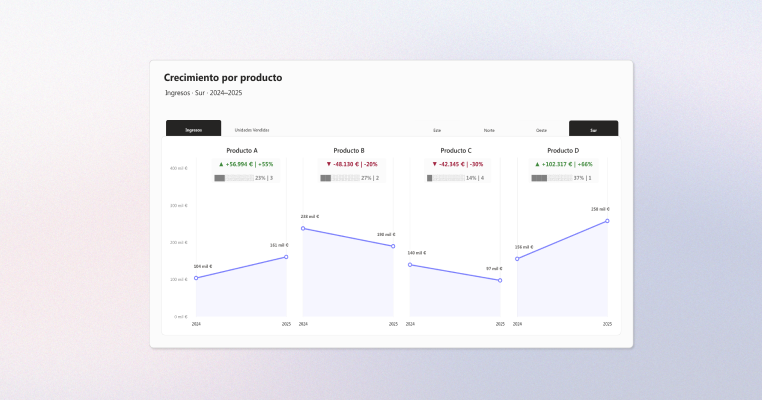
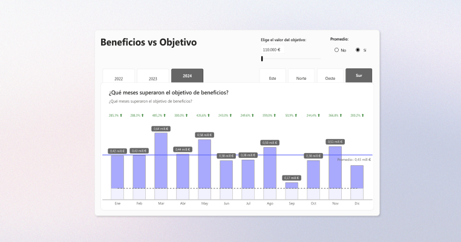
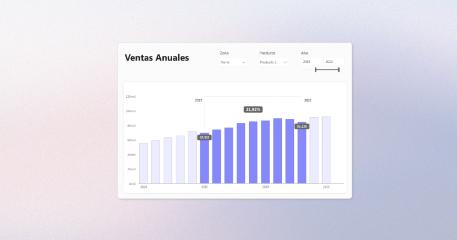

Power BI
Interactive dashboards, star schema data modelling, advanced DAX and visual design built for decisions. Every project starts from a real business question and is answered with data, context and visual hierarchy.
Dashboards
This is where I collect the projects I’ve built with Power BI. Each dashboard solves something different — sales, finance, marketing, retail — but they’re all designed so the answer can be read without having to ask.

Sales report with an IBCS approach
In many sales teams, sales analysis starts and ends with the total. If the figure goes up, all is well. The problem is that two periods can close with the same number and have been radically different underneath. I built a report that applies the IBCS standard to bring volume, absolute change and percentage change into a single visual, with three different chart types depending on the angle of reading.

Kosta Cálida — Reporting for a store network
A store chain with complete data in its point-of-sale system but no way to answer basic business questions: which store performs best, where margin is lost, whether targets are met or it just beats last month. I designed an end-to-end reporting system, from the data model to the dashboard, that answers those three questions at a glance.

Social Media Performance | 2025 vs 2024
When marketing results drop from one year to the next, the quick conclusion is that something has got worse. But −12% in impressions reads completely differently if spend also fell by −26%. I designed a year-on-year comparison dashboard focused on efficiency, how much each euro invested returns, not just on volume.

Complete financial report
In most companies, the financial information exists: there are balance sheets, income statements, budgets, journal entries. They’re scattered, and nobody in leadership can see the whole business in a single read. I designed an end-to-end financial analysis system that connects the balance sheet, P&L and cash flow, and lets you go from a leadership KPI down to the journal entry that explains it.

Profit and loss account
The profit and loss account is a company’s most important report and, curiously, one of those that works worst in BI tools. The problem isn’t technical: a P&L has subtotals with their own rules and accounting signs that don’t match analytical logic, and totals that stop adding up as soon as you change the context. I built a P&L in Power BI that adds up at any filter level, without losing the accounting logic along the way.

Airbnb market analysis — Basque Country
Most tourism market analyses start with price. This one starts with territory. With 6,030 properties spread across coast, city and inland areas, the map was the only honest way to read the Basque Country market. I set up a territorial analysis segmented by area, type of accommodation and host profile to understand what really lies behind the price and when that price makes sense.

RFM analysis — B2B hospitality distributor
A hospitality distributor, 400 customers and a drop in revenue nobody could explain. The RFM analysis identified €198,000 at risk within the segment that generated half the business. I built an RFM segmentation system that classifies each customer by when they bought, how often and how much, and assigns a specific sales action to each group.
DAX Lab
Experiments with DAX and advanced modelling in Power BI: patterns I reuse in real projects so I never write the same measure twice.
DAX measures designed to reuse comparative-period calculations without duplicating logic.
See measures →Dynamic rankings that let you analyse how categories or segments perform in different contexts.
Explore →Row-level security set up to limit access to the data according to each user’s profile.
See implementation →Community

You’re not filtering data. You’re choosing which story you want to see.
Input Slicer, field parameters and DAX for dynamic analysis in a single table.
View post
The future of dashboards isn’t more charts, it’s better interactions.
Input Slicer, Top N and dynamic titles so users can explore without getting lost.
View post
Product by product: how data tells stories.
Annual analysis with a quarterly zoom that explains who wins and when.
View post
If you have to rebuild the story in your head, the dashboard has failed.
Slope charts and small multiples to bring all the information together by product.
View post
A chart can be correct and still mislead.
How outliers distort the scale and how to build a visual zoom.
View post
Changes between columns, readable at a glance.
A native approach to making percentage changes between periods comparable.
View post